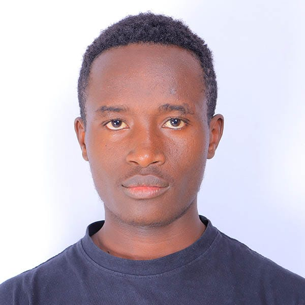

CURRICULUM VITAE

Name: Omari Demarcos
Date of Birth: 5th December 2005
Nationality: Kenyan
A motivated and detail-oriented Software Engineering student with strong problem-solving skills...
Kisii University: Bachelor of Science in Software Engineering (2024 – 2028)
Cardinal Otunga High School: KCSE (2020 – 2023)